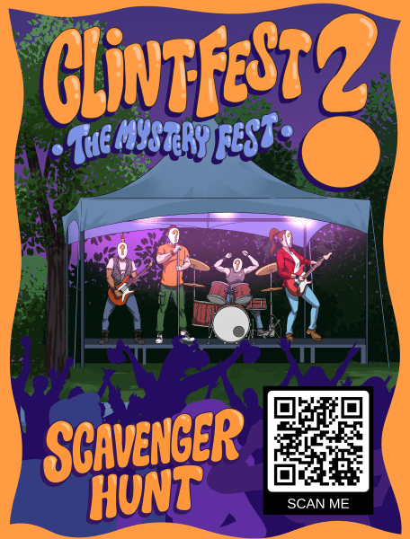

Welcome to the Stars Hollow Scavenger Hunt!
If you can't wait to find out the lineup, you've come to the right place. On the day of Clintfest, QR codes will be hidden throughout The Webster labeled "Scavenger Hunt”. Scan one with your phone's camera to unlock a clue. Collect enough clues and you'll be able to unscramble the words and solve the mystery!
Make sure you allow cookies and aren't in incognito/privacy mode as a default.
Start the puzzle by finding a QR code and scanning it with your phone!
